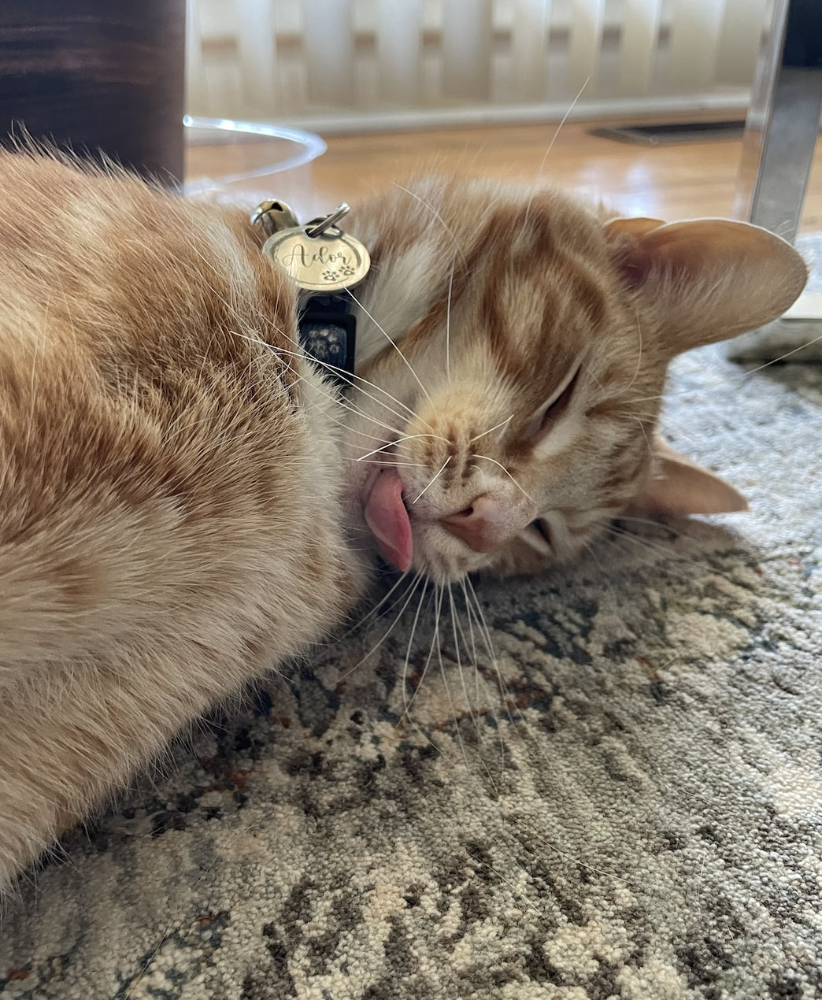
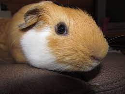

Meet Ador
"Ador is 1 year old. He is a very vocal cat who loves to be petted on his head. Ador enjoys wrestling with his sister Maya, who is a few months older than him. During Ador’s free time, he enjoys looking out the window to see birds and occasionally squirrels in our neighborhood who stop by to say hi to him!"
Photo Gallery


Ador Likes:
- Dry treats
- Cuddling
- Sleep
Meet Cheeto

"Cheeto is a cat who likes to eat a lot and play a lot. He has an obsession with his grandpa (human) and tries to get outside every single day. If he isn't causing problems, he is usually hiding in a seven foot tall cat tree and sleeping."
Photo Gallery


Cheeto Likes:
- Treats
- Exploring
- My Dad
Meet Leo
"Guinea pigs are a naturally energetic animal, who spend up to 20 hours a day awake. Despite being awake for long periods of time, they naturally hide in their habitats, and can be difficult to see in their inclosures. Guinea pigs naturally are social creatures that enjoy socializing with other guinea pigs, in the wild they form packs of five to ten."
Photo Gallery


Leo Likes:
- Lettuce
- Tiny Hops
- Nap Time
Meet Milktea

"Milktea is a Scottish fold with a personality of a princess. She loves her veggies and refuses to eat anything dropped on the ground. She makes it clear when she has a demand of any sort by complaining in a loud, distinguished manner. If what she says could be translated, it probably would be, “This is atrocious, the water container has been empty for the 3rd time this week. I want to see the manager.”"
Photo Gallery


Milktea Likes:
- Corn kernels
- Suitcases
- Soft surfaces
Meet Jingle

"Jingle loves going outside. He used to be an outdoor/indoor cat until we realized that he loved to get injured. Now, we take him on walks with a leash which he loves! Every time he sees me carrying the leash he goes crazy and meows to go out."
Photo Gallery


Jingle Likes:
- Walks
- Being pet
- Eating treats